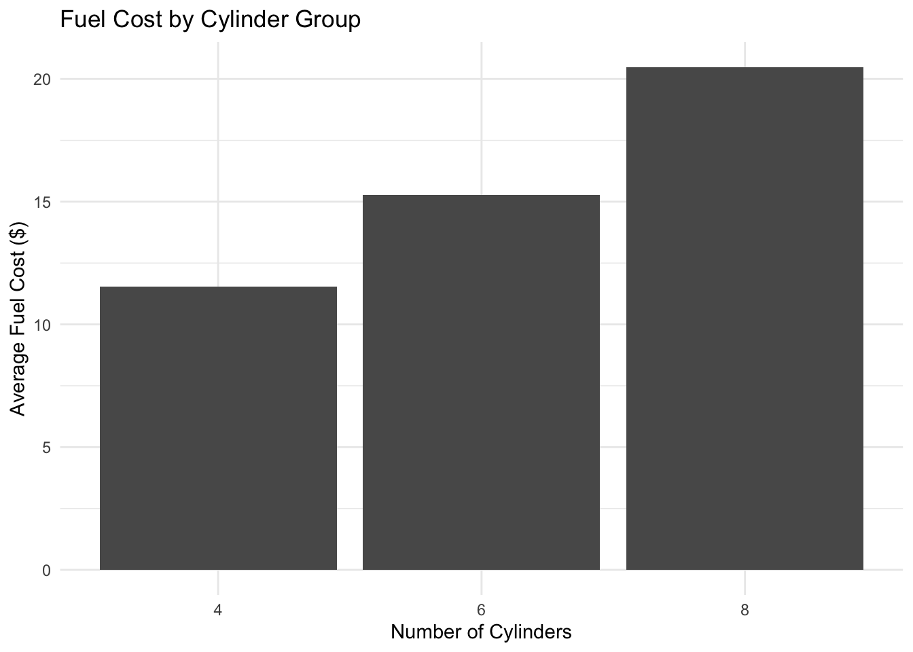

install.packages("purrr")Functional programming
Using the
purrr package to work with functions and vectors
Pre-lecture activities
Important
In advance of class, please install
purrr- this provides a consistent functional programming interface to work with functions and vectors
You can do this by calling
And load the package using:
library(purrr)In addition, please read through
- https://adv-r.hadley.nz/functionals.html
- https://raw.githubusercontent.com/rstudio/cheatsheets/main/purrr.pdf
How much should I prepare for before class?
Lecture
Acknowledgements
Material for this lecture was borrowed and adopted from
Learning objectives
Learning objectives
At the end of this lesson you will:
- Be familiar with the concept of functional languages and functional styles of programming
- Get comfortable with the major functions in
purrr(e.g. themapfamily of functions) - Write your loops with
mapfunctions instead of theforloop
Slides
- To be added.
Class activity
For the rest of the time in class, we will use the mtcars dataset to practice using functions from the purrr package. The purpose is to demonstrates how functional programming can simplify repeated operations on datasets. This dataset contains various measurements for different car models. Find a partner and complete the activities below together. After running each step, I encourage you to look at the outputs and transformations to understand how purrr is working with each column in the dataset.
Objectives of the activity
- Use
purrr::map_*functions to calculate summary statistics for each column. - Transform specific columns using functions from
purrr. - Apply a conditional transformation across the dataset.
First, we will load two packages and create a copy of the mtcars dataset
library(purrr)
library(dplyr)
data <- mtcarsPart 1: Basic column summaries
- Use
map_dbl()to calculate the mean of each column in the mtcars dataset.
Hint: map_dbl(data, mean) will apply the mean function to each column and return a vector of means.
Use
map_dbl()to calculate the standard deviation of each column.Use
map()to create a named list where each element is the range of values in a column.
Solution
# Calculate the mean of each column
column_means <- map_dbl(data, mean)
column_means mpg cyl disp hp drat wt qsec
20.090625 6.187500 230.721875 146.687500 3.596563 3.217250 17.848750
vs am gear carb
0.437500 0.406250 3.687500 2.812500 # Calculate the standard deviation of each column
column_sds <- map_dbl(data, sd)
column_sds mpg cyl disp hp drat wt
6.0269481 1.7859216 123.9386938 68.5628685 0.5346787 0.9784574
qsec vs am gear carb
1.7869432 0.5040161 0.4989909 0.7378041 1.6152000 # Calculate the range of each column
column_ranges <- map(data, range)
column_ranges$mpg
[1] 10.4 33.9
$cyl
[1] 4 8
$disp
[1] 71.1 472.0
$hp
[1] 52 335
$drat
[1] 2.76 4.93
$wt
[1] 1.513 5.424
$qsec
[1] 14.5 22.9
$vs
[1] 0 1
$am
[1] 0 1
$gear
[1] 3 5
$carb
[1] 1 8The first one will return a named vector of mean values for each column. The last one returns a named list where each element is a vector of the minimum and maximum values for each column.
Part 2: Conditional transformation with map_if()
- Use
map_if()to multiply by 100 all columns where the mean is less than 20. For example, if the column represents miles per gallon, multiply each value by 100. - Check the resulting data frame.
Solution
transformed_data <- map_if(data, ~ mean(.x) < 20, ~ .x * 100)
transformed_data <- as.data.frame(transformed_data) # Convert back to data frame if desired
transformed_data mpg cyl disp hp drat wt qsec vs am gear carb
1 21.0 600 160.0 110 390 262.0 1646 0 100 400 400
2 21.0 600 160.0 110 390 287.5 1702 0 100 400 400
3 22.8 400 108.0 93 385 232.0 1861 100 100 400 100
4 21.4 600 258.0 110 308 321.5 1944 100 0 300 100
5 18.7 800 360.0 175 315 344.0 1702 0 0 300 200
6 18.1 600 225.0 105 276 346.0 2022 100 0 300 100
7 14.3 800 360.0 245 321 357.0 1584 0 0 300 400
8 24.4 400 146.7 62 369 319.0 2000 100 0 400 200
9 22.8 400 140.8 95 392 315.0 2290 100 0 400 200
10 19.2 600 167.6 123 392 344.0 1830 100 0 400 400
11 17.8 600 167.6 123 392 344.0 1890 100 0 400 400
12 16.4 800 275.8 180 307 407.0 1740 0 0 300 300
13 17.3 800 275.8 180 307 373.0 1760 0 0 300 300
14 15.2 800 275.8 180 307 378.0 1800 0 0 300 300
15 10.4 800 472.0 205 293 525.0 1798 0 0 300 400
16 10.4 800 460.0 215 300 542.4 1782 0 0 300 400
17 14.7 800 440.0 230 323 534.5 1742 0 0 300 400
18 32.4 400 78.7 66 408 220.0 1947 100 100 400 100
19 30.4 400 75.7 52 493 161.5 1852 100 100 400 200
20 33.9 400 71.1 65 422 183.5 1990 100 100 400 100
21 21.5 400 120.1 97 370 246.5 2001 100 0 300 100
22 15.5 800 318.0 150 276 352.0 1687 0 0 300 200
23 15.2 800 304.0 150 315 343.5 1730 0 0 300 200
24 13.3 800 350.0 245 373 384.0 1541 0 0 300 400
25 19.2 800 400.0 175 308 384.5 1705 0 0 300 200
26 27.3 400 79.0 66 408 193.5 1890 100 100 400 100
27 26.0 400 120.3 91 443 214.0 1670 0 100 500 200
28 30.4 400 95.1 113 377 151.3 1690 100 100 500 200
29 15.8 800 351.0 264 422 317.0 1450 0 100 500 400
30 19.7 600 145.0 175 362 277.0 1550 0 100 500 600
31 15.0 800 301.0 335 354 357.0 1460 0 100 500 800
32 21.4 400 121.0 109 411 278.0 1860 100 100 400 200This will multiply each element in columns where the mean is less than 20 by 100. Note that the output is a list; converting it back to a data frame makes it easier to view the result.
Part 3: Apply a custom function with map()
Write a custom function that takes a column and returns the log-transformed values if the mean of the column is greater than 20, otherwise returns the square root of the values.
Use
map()to apply this custom function to each column.
Solution
transform_column <- function(column) {
if (mean(column) > 20) {
log(column)
} else {
sqrt(column)
}
}transformed_data_custom <- map(data, transform_column)
transformed_data_custom <- as.data.frame(transformed_data_custom)
transformed_data_custom mpg cyl disp hp drat wt qsec vs am
1 3.044522 2.449490 5.075174 4.700480 1.974842 1.618641 4.057093 0 1
2 3.044522 2.449490 5.075174 4.700480 1.974842 1.695582 4.125530 0 1
3 3.126761 2.000000 4.682131 4.532599 1.962142 1.523155 4.313931 1 1
4 3.063391 2.449490 5.552960 4.700480 1.754993 1.793042 4.409082 1 0
5 2.928524 2.828427 5.886104 5.164786 1.774824 1.854724 4.125530 0 0
6 2.895912 2.449490 5.416100 4.653960 1.661325 1.860108 4.496665 1 0
7 2.660260 2.828427 5.886104 5.501258 1.791647 1.889444 3.979950 0 0
8 3.194583 2.000000 4.988390 4.127134 1.920937 1.786057 4.472136 1 0
9 3.126761 2.000000 4.947340 4.553877 1.979899 1.774824 4.785394 1 0
10 2.954910 2.449490 5.121580 4.812184 1.979899 1.854724 4.277850 1 0
11 2.879198 2.449490 5.121580 4.812184 1.979899 1.854724 4.347413 1 0
12 2.797281 2.828427 5.619676 5.192957 1.752142 2.017424 4.171331 0 0
13 2.850707 2.828427 5.619676 5.192957 1.752142 1.931321 4.195235 0 0
14 2.721295 2.828427 5.619676 5.192957 1.752142 1.944222 4.242641 0 0
15 2.341806 2.828427 6.156979 5.323010 1.711724 2.291288 4.240283 0 0
16 2.341806 2.828427 6.131226 5.370638 1.732051 2.328948 4.221374 0 0
17 2.687847 2.828427 6.086775 5.438079 1.797220 2.311926 4.173727 0 0
18 3.478158 2.000000 4.365643 4.189655 2.019901 1.483240 4.412482 1 1
19 3.414443 2.000000 4.326778 3.951244 2.220360 1.270827 4.303487 1 1
20 3.523415 2.000000 4.264087 4.174387 2.054264 1.354622 4.460942 1 1
21 3.068053 2.000000 4.788325 4.574711 1.923538 1.570032 4.473254 1 0
22 2.740840 2.828427 5.762051 5.010635 1.661325 1.876166 4.107311 0 0
23 2.721295 2.828427 5.717028 5.010635 1.774824 1.853375 4.159327 0 0
24 2.587764 2.828427 5.857933 5.501258 1.931321 1.959592 3.925557 0 0
25 2.954910 2.828427 5.991465 5.164786 1.754993 1.960867 4.129165 0 0
26 3.306887 2.000000 4.369448 4.189655 2.019901 1.391043 4.347413 1 1
27 3.258097 2.000000 4.789989 4.510860 2.104757 1.462874 4.086563 0 1
28 3.414443 2.000000 4.554929 4.727388 1.941649 1.230041 4.110961 1 1
29 2.760010 2.828427 5.860786 5.575949 2.054264 1.780449 3.807887 0 1
30 2.980619 2.449490 4.976734 5.164786 1.902630 1.664332 3.937004 0 1
31 2.708050 2.828427 5.707110 5.814131 1.881489 1.889444 3.820995 0 1
32 3.063391 2.000000 4.795791 4.691348 2.027313 1.667333 4.312772 1 1
gear carb
1 2.000000 2.000000
2 2.000000 2.000000
3 2.000000 1.000000
4 1.732051 1.000000
5 1.732051 1.414214
6 1.732051 1.000000
7 1.732051 2.000000
8 2.000000 1.414214
9 2.000000 1.414214
10 2.000000 2.000000
11 2.000000 2.000000
12 1.732051 1.732051
13 1.732051 1.732051
14 1.732051 1.732051
15 1.732051 2.000000
16 1.732051 2.000000
17 1.732051 2.000000
18 2.000000 1.000000
19 2.000000 1.414214
20 2.000000 1.000000
21 1.732051 1.000000
22 1.732051 1.414214
23 1.732051 1.414214
24 1.732051 2.000000
25 1.732051 1.414214
26 2.000000 1.000000
27 2.236068 1.414214
28 2.236068 1.414214
29 2.236068 2.000000
30 2.236068 2.449490
31 2.236068 2.828427
32 2.000000 1.414214Part 4: Create nested lists and summaries
First, use
split()to divide mtcars into subsets based on thecylcolumn.Use
map()to apply a summary function (e.g., mean, median) to each subset for columns likempg,hp, andwt(weight).Then, take each subset from above, and for each one, use
map()to calculate the mean and standard deviation of each column. Organize the output into a nested list, where each main element corresponds to a cylinder group, and each group contains the summary statistics for each column.
Solution
# Split data by the number of cylinders
cyl_groups <- split(mtcars, mtcars$cyl)
# Calculate the mean for mpg, hp, and wt in each group
group_means <- map(cyl_groups, ~ map_dbl(.x[, c("mpg", "hp", "wt")], mean))
group_means$`4`
mpg hp wt
26.663636 82.636364 2.285727
$`6`
mpg hp wt
19.742857 122.285714 3.117143
$`8`
mpg hp wt
15.100000 209.214286 3.999214 # Calculate mean and standard deviation for each column in each group
group_summary <- map(cyl_groups, ~ map(.x, function(col) {
list(mean = mean(col), sd = sd(col))
}))
group_summary$`4`
$`4`$mpg
$`4`$mpg$mean
[1] 26.66364
$`4`$mpg$sd
[1] 4.509828
$`4`$cyl
$`4`$cyl$mean
[1] 4
$`4`$cyl$sd
[1] 0
$`4`$disp
$`4`$disp$mean
[1] 105.1364
$`4`$disp$sd
[1] 26.87159
$`4`$hp
$`4`$hp$mean
[1] 82.63636
$`4`$hp$sd
[1] 20.93453
$`4`$drat
$`4`$drat$mean
[1] 4.070909
$`4`$drat$sd
[1] 0.3654711
$`4`$wt
$`4`$wt$mean
[1] 2.285727
$`4`$wt$sd
[1] 0.5695637
$`4`$qsec
$`4`$qsec$mean
[1] 19.13727
$`4`$qsec$sd
[1] 1.682445
$`4`$vs
$`4`$vs$mean
[1] 0.9090909
$`4`$vs$sd
[1] 0.3015113
$`4`$am
$`4`$am$mean
[1] 0.7272727
$`4`$am$sd
[1] 0.4670994
$`4`$gear
$`4`$gear$mean
[1] 4.090909
$`4`$gear$sd
[1] 0.5393599
$`4`$carb
$`4`$carb$mean
[1] 1.545455
$`4`$carb$sd
[1] 0.522233
$`6`
$`6`$mpg
$`6`$mpg$mean
[1] 19.74286
$`6`$mpg$sd
[1] 1.453567
$`6`$cyl
$`6`$cyl$mean
[1] 6
$`6`$cyl$sd
[1] 0
$`6`$disp
$`6`$disp$mean
[1] 183.3143
$`6`$disp$sd
[1] 41.56246
$`6`$hp
$`6`$hp$mean
[1] 122.2857
$`6`$hp$sd
[1] 24.26049
$`6`$drat
$`6`$drat$mean
[1] 3.585714
$`6`$drat$sd
[1] 0.4760552
$`6`$wt
$`6`$wt$mean
[1] 3.117143
$`6`$wt$sd
[1] 0.3563455
$`6`$qsec
$`6`$qsec$mean
[1] 17.97714
$`6`$qsec$sd
[1] 1.706866
$`6`$vs
$`6`$vs$mean
[1] 0.5714286
$`6`$vs$sd
[1] 0.5345225
$`6`$am
$`6`$am$mean
[1] 0.4285714
$`6`$am$sd
[1] 0.5345225
$`6`$gear
$`6`$gear$mean
[1] 3.857143
$`6`$gear$sd
[1] 0.6900656
$`6`$carb
$`6`$carb$mean
[1] 3.428571
$`6`$carb$sd
[1] 1.812654
$`8`
$`8`$mpg
$`8`$mpg$mean
[1] 15.1
$`8`$mpg$sd
[1] 2.560048
$`8`$cyl
$`8`$cyl$mean
[1] 8
$`8`$cyl$sd
[1] 0
$`8`$disp
$`8`$disp$mean
[1] 353.1
$`8`$disp$sd
[1] 67.77132
$`8`$hp
$`8`$hp$mean
[1] 209.2143
$`8`$hp$sd
[1] 50.97689
$`8`$drat
$`8`$drat$mean
[1] 3.229286
$`8`$drat$sd
[1] 0.3723618
$`8`$wt
$`8`$wt$mean
[1] 3.999214
$`8`$wt$sd
[1] 0.7594047
$`8`$qsec
$`8`$qsec$mean
[1] 16.77214
$`8`$qsec$sd
[1] 1.196014
$`8`$vs
$`8`$vs$mean
[1] 0
$`8`$vs$sd
[1] 0
$`8`$am
$`8`$am$mean
[1] 0.1428571
$`8`$am$sd
[1] 0.3631365
$`8`$gear
$`8`$gear$mean
[1] 3.285714
$`8`$gear$sd
[1] 0.726273
$`8`$carb
$`8`$carb$mean
[1] 3.5
$`8`$carb$sd
[1] 1.556624Part 5: Row-wise transformation and aggregation
First, define a function that assigns each row a fuel efficiency category based on
mpg:- “High” if
mpg> 25 - “Medium” if
mpgis between 20 and 25 - “Low” if
mpg< 20
- “High” if
Use
map()to apply this function row-wise and add the results as a new column inmtcars.Then, split the dataset by fuel efficiency category from the previous step. For each category, calculate the mean values of
hp,wt, andqsec(1/4 mile time).
Solution
# Function to assign fuel efficiency category based on mpg
fuel_efficiency <- function(row) {
mpg <- row["mpg"]
if (mpg > 25) {
"High"
} else if (mpg >= 20) {
"Medium"
} else {
"Low"
}
}
# Add fuel efficiency as a new column
mtcars$fuel_efficiency <- map_chr(asplit(mtcars, 1), fuel_efficiency)
mtcars mpg cyl disp hp drat wt qsec vs am gear carb
Mazda RX4 21.0 6 160.0 110 3.90 2.620 16.46 0 1 4 4
Mazda RX4 Wag 21.0 6 160.0 110 3.90 2.875 17.02 0 1 4 4
Datsun 710 22.8 4 108.0 93 3.85 2.320 18.61 1 1 4 1
Hornet 4 Drive 21.4 6 258.0 110 3.08 3.215 19.44 1 0 3 1
Hornet Sportabout 18.7 8 360.0 175 3.15 3.440 17.02 0 0 3 2
Valiant 18.1 6 225.0 105 2.76 3.460 20.22 1 0 3 1
Duster 360 14.3 8 360.0 245 3.21 3.570 15.84 0 0 3 4
Merc 240D 24.4 4 146.7 62 3.69 3.190 20.00 1 0 4 2
Merc 230 22.8 4 140.8 95 3.92 3.150 22.90 1 0 4 2
Merc 280 19.2 6 167.6 123 3.92 3.440 18.30 1 0 4 4
Merc 280C 17.8 6 167.6 123 3.92 3.440 18.90 1 0 4 4
Merc 450SE 16.4 8 275.8 180 3.07 4.070 17.40 0 0 3 3
Merc 450SL 17.3 8 275.8 180 3.07 3.730 17.60 0 0 3 3
Merc 450SLC 15.2 8 275.8 180 3.07 3.780 18.00 0 0 3 3
Cadillac Fleetwood 10.4 8 472.0 205 2.93 5.250 17.98 0 0 3 4
Lincoln Continental 10.4 8 460.0 215 3.00 5.424 17.82 0 0 3 4
Chrysler Imperial 14.7 8 440.0 230 3.23 5.345 17.42 0 0 3 4
Fiat 128 32.4 4 78.7 66 4.08 2.200 19.47 1 1 4 1
Honda Civic 30.4 4 75.7 52 4.93 1.615 18.52 1 1 4 2
Toyota Corolla 33.9 4 71.1 65 4.22 1.835 19.90 1 1 4 1
Toyota Corona 21.5 4 120.1 97 3.70 2.465 20.01 1 0 3 1
Dodge Challenger 15.5 8 318.0 150 2.76 3.520 16.87 0 0 3 2
AMC Javelin 15.2 8 304.0 150 3.15 3.435 17.30 0 0 3 2
Camaro Z28 13.3 8 350.0 245 3.73 3.840 15.41 0 0 3 4
Pontiac Firebird 19.2 8 400.0 175 3.08 3.845 17.05 0 0 3 2
Fiat X1-9 27.3 4 79.0 66 4.08 1.935 18.90 1 1 4 1
Porsche 914-2 26.0 4 120.3 91 4.43 2.140 16.70 0 1 5 2
Lotus Europa 30.4 4 95.1 113 3.77 1.513 16.90 1 1 5 2
Ford Pantera L 15.8 8 351.0 264 4.22 3.170 14.50 0 1 5 4
Ferrari Dino 19.7 6 145.0 175 3.62 2.770 15.50 0 1 5 6
Maserati Bora 15.0 8 301.0 335 3.54 3.570 14.60 0 1 5 8
Volvo 142E 21.4 4 121.0 109 4.11 2.780 18.60 1 1 4 2
fuel_efficiency
Mazda RX4 Medium
Mazda RX4 Wag Medium
Datsun 710 Medium
Hornet 4 Drive Medium
Hornet Sportabout Low
Valiant Low
Duster 360 Low
Merc 240D Medium
Merc 230 Medium
Merc 280 Low
Merc 280C Low
Merc 450SE Low
Merc 450SL Low
Merc 450SLC Low
Cadillac Fleetwood Low
Lincoln Continental Low
Chrysler Imperial Low
Fiat 128 High
Honda Civic High
Toyota Corolla High
Toyota Corona Medium
Dodge Challenger Low
AMC Javelin Low
Camaro Z28 Low
Pontiac Firebird Low
Fiat X1-9 High
Porsche 914-2 High
Lotus Europa High
Ford Pantera L Low
Ferrari Dino Low
Maserati Bora Low
Volvo 142E Medium# Split by fuel efficiency
efficiency_groups <- split(mtcars, mtcars$fuel_efficiency)
# Calculate mean hp, wt, and qsec for each group
efficiency_summary <- map(efficiency_groups, ~ map_dbl(.x[, c("hp", "wt", "qsec")], mean))
efficiency_summary$High
hp wt qsec
75.50000 1.87300 18.39833
$Low
hp wt qsec
191.944444 3.838833 17.096111
$Medium
hp wt qsec
98.250000 2.826875 19.130000 Part 6: Visualizations and transformations
Write a function that, for each row, converts
mpgto a “fuel cost” using a hypothetical rate of $3 per gallon for a 100-mile journey where “fuel cost” = (100 mile journey /mpg) * $3 per gallonUse
map_dbl()to apply this transformation to thempgcolumn and add it as a new column calledfuel_cost.Using
map()withggplot2, create a bar plot of the averagefuel_costfor eachcyl. For each cylinder group, plot the average values ofmpg,hp, andwt.
Solution
# Calculate fuel cost based on mpg
calculate_fuel_cost <- function(mpg) {
(100 / mpg) * 3
}
# Apply transformation to mpg column
mtcars$fuel_cost <- map_dbl(mtcars$mpg, calculate_fuel_cost)
mtcars mpg cyl disp hp drat wt qsec vs am gear carb
Mazda RX4 21.0 6 160.0 110 3.90 2.620 16.46 0 1 4 4
Mazda RX4 Wag 21.0 6 160.0 110 3.90 2.875 17.02 0 1 4 4
Datsun 710 22.8 4 108.0 93 3.85 2.320 18.61 1 1 4 1
Hornet 4 Drive 21.4 6 258.0 110 3.08 3.215 19.44 1 0 3 1
Hornet Sportabout 18.7 8 360.0 175 3.15 3.440 17.02 0 0 3 2
Valiant 18.1 6 225.0 105 2.76 3.460 20.22 1 0 3 1
Duster 360 14.3 8 360.0 245 3.21 3.570 15.84 0 0 3 4
Merc 240D 24.4 4 146.7 62 3.69 3.190 20.00 1 0 4 2
Merc 230 22.8 4 140.8 95 3.92 3.150 22.90 1 0 4 2
Merc 280 19.2 6 167.6 123 3.92 3.440 18.30 1 0 4 4
Merc 280C 17.8 6 167.6 123 3.92 3.440 18.90 1 0 4 4
Merc 450SE 16.4 8 275.8 180 3.07 4.070 17.40 0 0 3 3
Merc 450SL 17.3 8 275.8 180 3.07 3.730 17.60 0 0 3 3
Merc 450SLC 15.2 8 275.8 180 3.07 3.780 18.00 0 0 3 3
Cadillac Fleetwood 10.4 8 472.0 205 2.93 5.250 17.98 0 0 3 4
Lincoln Continental 10.4 8 460.0 215 3.00 5.424 17.82 0 0 3 4
Chrysler Imperial 14.7 8 440.0 230 3.23 5.345 17.42 0 0 3 4
Fiat 128 32.4 4 78.7 66 4.08 2.200 19.47 1 1 4 1
Honda Civic 30.4 4 75.7 52 4.93 1.615 18.52 1 1 4 2
Toyota Corolla 33.9 4 71.1 65 4.22 1.835 19.90 1 1 4 1
Toyota Corona 21.5 4 120.1 97 3.70 2.465 20.01 1 0 3 1
Dodge Challenger 15.5 8 318.0 150 2.76 3.520 16.87 0 0 3 2
AMC Javelin 15.2 8 304.0 150 3.15 3.435 17.30 0 0 3 2
Camaro Z28 13.3 8 350.0 245 3.73 3.840 15.41 0 0 3 4
Pontiac Firebird 19.2 8 400.0 175 3.08 3.845 17.05 0 0 3 2
Fiat X1-9 27.3 4 79.0 66 4.08 1.935 18.90 1 1 4 1
Porsche 914-2 26.0 4 120.3 91 4.43 2.140 16.70 0 1 5 2
Lotus Europa 30.4 4 95.1 113 3.77 1.513 16.90 1 1 5 2
Ford Pantera L 15.8 8 351.0 264 4.22 3.170 14.50 0 1 5 4
Ferrari Dino 19.7 6 145.0 175 3.62 2.770 15.50 0 1 5 6
Maserati Bora 15.0 8 301.0 335 3.54 3.570 14.60 0 1 5 8
Volvo 142E 21.4 4 121.0 109 4.11 2.780 18.60 1 1 4 2
fuel_efficiency fuel_cost
Mazda RX4 Medium 14.285714
Mazda RX4 Wag Medium 14.285714
Datsun 710 Medium 13.157895
Hornet 4 Drive Medium 14.018692
Hornet Sportabout Low 16.042781
Valiant Low 16.574586
Duster 360 Low 20.979021
Merc 240D Medium 12.295082
Merc 230 Medium 13.157895
Merc 280 Low 15.625000
Merc 280C Low 16.853933
Merc 450SE Low 18.292683
Merc 450SL Low 17.341040
Merc 450SLC Low 19.736842
Cadillac Fleetwood Low 28.846154
Lincoln Continental Low 28.846154
Chrysler Imperial Low 20.408163
Fiat 128 High 9.259259
Honda Civic High 9.868421
Toyota Corolla High 8.849558
Toyota Corona Medium 13.953488
Dodge Challenger Low 19.354839
AMC Javelin Low 19.736842
Camaro Z28 Low 22.556391
Pontiac Firebird Low 15.625000
Fiat X1-9 High 10.989011
Porsche 914-2 High 11.538462
Lotus Europa High 9.868421
Ford Pantera L Low 18.987342
Ferrari Dino Low 15.228426
Maserati Bora Low 20.000000
Volvo 142E Medium 14.018692library(ggplot2)
# Calculate average fuel cost for each cylinder group
avg_fuel_cost <- mtcars %>%
group_by(cyl) %>%
summarize(avg_fuel_cost = mean(fuel_cost))
# Plot average fuel cost by cylinder count
ggplot(avg_fuel_cost, aes(x = factor(cyl), y = avg_fuel_cost)) +
geom_bar(stat = "identity") +
labs(x = "Number of Cylinders",
y = "Average Fuel Cost ($)",
title = "Fuel Cost by Cylinder Group") +
theme_minimal()
Part 7: Discuss with your partner
- How does
purrrmake it easier to perform repeated transformations compared to base R? - What are some use cases where conditional transformations like
map_if()could be helpful in real-world data?
Post-lecture
Summary
- Introduction to functional programming.
- The R package
purrrprovides a nice interface to functional programming and list manipulation. - The function
mapand its aternativemap_*provide a neat way to iterate over a list or vector with the output in different data structures. - The function
map2andpmapallow having more than one list as input. - The function
walkand its alternativeswalk2,walk_*, which do not provide any output.
Additional practice
Here are some additional practice questions to help you think about the material discussed.
Questions
Use
as_mapper()to explore how purrr generates anonymous functions for the integer, character, and list helpers. What helper allows you to extract attributes? Read the documentation to find out.map(1:3, ~ runif(2))is a useful pattern for generating random numbers, butmap(1:3, runif(2))is not. Why not? Can you explain why it returns the result that it does?Can you write a section of code to demonstrate the central limit theorem primarily using the
purrrpackage and/or using the R base package?Use the appropriate
map()function to:Compute the standard deviation of every column in a numeric data frame.
Compute the standard deviation of every numeric column in a mixed data frame. (Hint: you will need to do it in two steps.)
Compute the number of levels for every factor in a data frame.
The following code simulates the performance of a t-test for non-normal data. Extract the p-value from each test, then visualise.
trials <- map(1:100, ~ t.test(rpois(10, 10), rpois(7, 10)))Use
map()to fit linear models to themtcarsdataset using the formulas stored in this list:data(mtcars) formulas <- list( mpg ~ disp, mpg ~ I(1 / disp), mpg ~ disp + wt, mpg ~ I(1 / disp) + wt )Fit the model
mpg ~ dispto each of the bootstrap replicates ofmtcarsin the list below, then extract the \(R^2\) of the model fit (Hint: you can compute the \(R^2\) withsummary().)bootstrap <- function(df) { df[sample(nrow(df), replace = TRUE), , drop = FALSE] } bootstraps <- map(1:10, ~ bootstrap(mtcars))